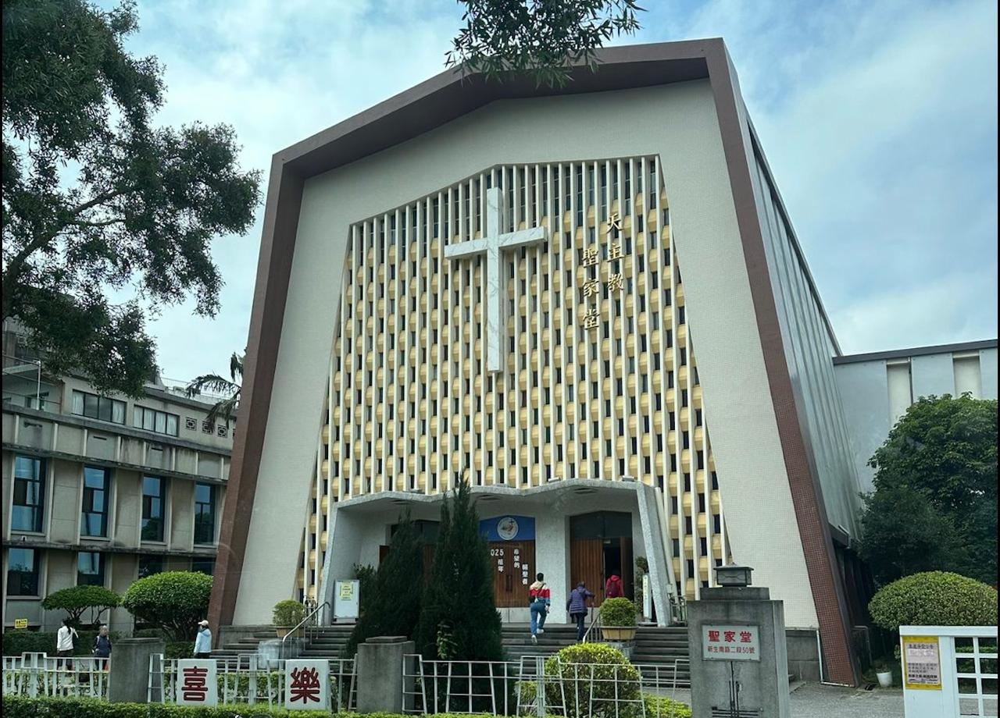

Taipei Holy Family Catholic Church
The uniqueness of the church building that I visited was the modern architectural design and the arrangement of the chairs in the church was in the shape of the letter T or like a cross. Then this church has congregations from various countries. History of the Holy Family Church: This church has been standing for 72 years, since 1953. This church is a moving church that was previously located on another street in 1952. The difference between the Holy Family Church and the Saint Laurensius Church is that the Holy Family Church has a modern architectural design while the Saint Laurensius Church looks like a church in Rome with a historical design. In addition, the Holy Family Church has a more diverse congregation in terms of the country.